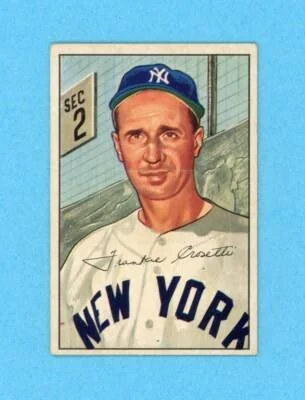
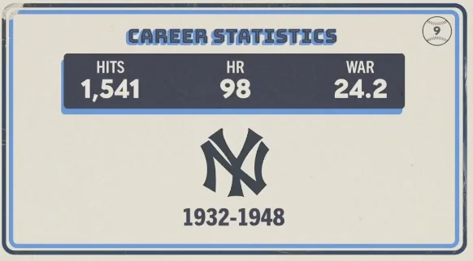

Frankie Crosetti "Crow"
Career Highlights & Facts
(Facts are AI-generated and may require verification)
- A member of a famous trio of Italian-American players who arrived in the Bronx from the Pacific Coast League, he became a fixture in pinstripes for 37 seasons as both a player and a coach.
- Known as the 'holler guy' of the team, he was instructed by his manager to fire the ball hard at a legendary first baseman during practice to wake him up, a task he performed with such intensity that he became a permanent fixture on the field.
- He mastered the hidden-ball trick and took immense pride in leading the league in being hit by pitches, serving as a key defensive anchor during seven World Series championship runs.
Would you like to find out more about Frankie Crosetti?
Career Totals
| WAR | AB | H | HR | BA | R | RBI | SB | OBP | SLG | OPS | OPS+ |
|---|---|---|---|---|---|---|---|---|---|---|---|
| 24.2 | 6277 | 1541 | 98 | .245 | 1006 | 649 | 113 | .341 | .354 | .695 | 83 |
Statistics via Baseball-Reference.com
The Original Clue
